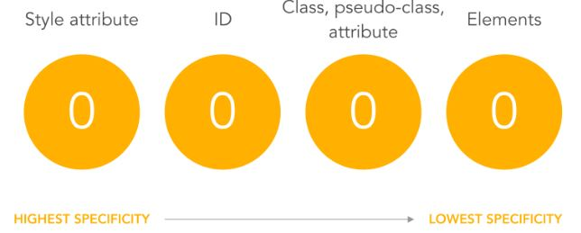

The set of the rules applied to CSS selectors in order to determine which style is applied to an element. The more specific a CSS style is, the higher point value it accrues, and the likelier it is to be present on the element's style.
It helps you understand why your stypes aren't being applied
Example:
A: h1 B: #content h1 C: <div id="content"><h1 style="color: #fffff">Heading</h1</div>
The specificity of A is 1 (one element)
The specificity of B is 101 (one ID reference and one element)
The specificity of C is 1000 (inline styling)